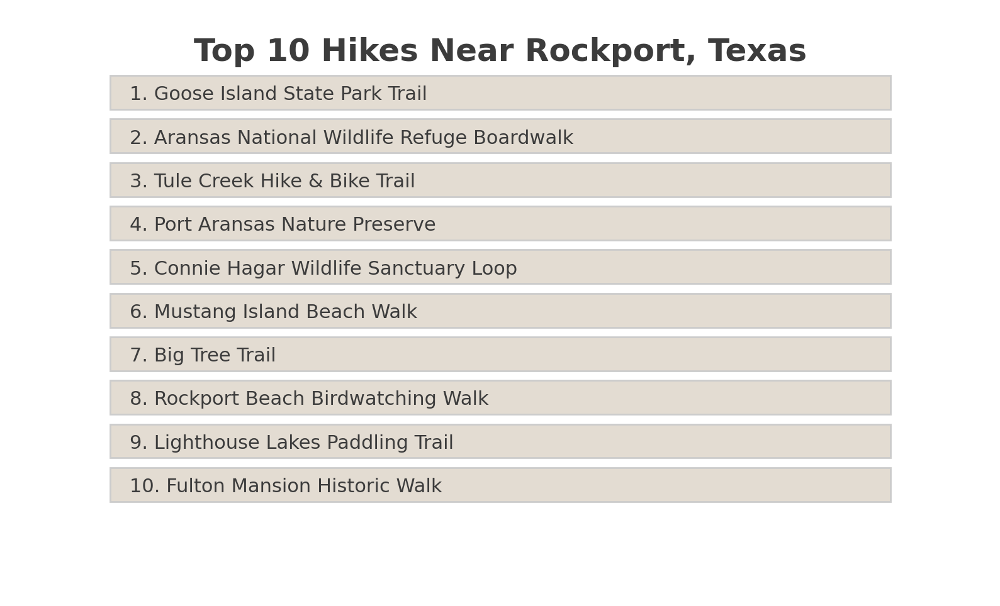

Trail Notes & AI Picks
Welcome to your basecamp for curated hikes, expert tips, and AI-generated trail insights. Whether you're planning a weekend escape or a long-distance trek, this is where you'll discover the gems, the hacks, and the gear recs to make your trip epic.
Top 10 Hikes Near Rockport, Texas
Ready to hit the trails? Explore our curated list of the top 10 hikes around Rockport for every adventure level. These are handpicked with AI + local insight — updated regularly with trail info, parking, difficulty, and tips.
 View the List